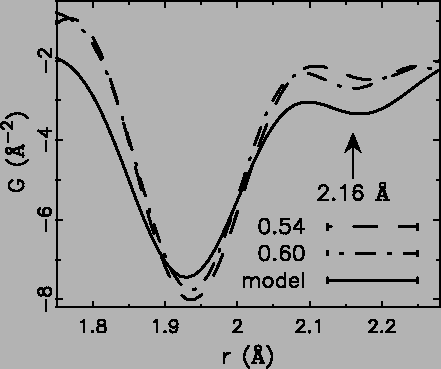
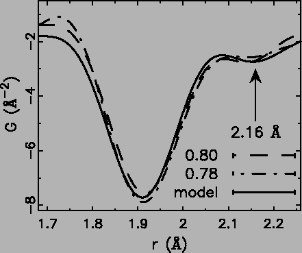
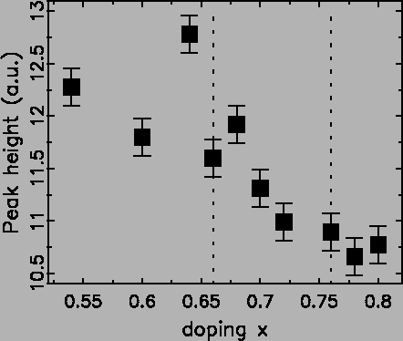

Low-r PDF peaks directly reflect the local structural details, and
disorder in the local structure can cause excess peak
broadening [23], extra shoulders [162] and
even split peaks [127]. The prolate JT distorted
octahedra of Mn3+ ions result in four short Mn-O bonds in the range
1.92-1.97 Å and two long bonds at 2.16 Å
[169,126,127]. In the cubic manganites,
in the absence of disorder, these are easily resolved in the
PDF [127]. With doping the loss of orientational order of
the orbitals quickly suppresses the coherent JT distortion and the
average structure changes from orthorhombic to rhombohedral. However,
the presence of fully JT distorted octahedra is evident in the local
structure, though the peak in the PDF from the long-bonds is not
resolved and is evident only as a broad
shoulder [23,170,171].
We first investigated the PDFs from these layered, doped, manganites
to search for qualitative evidence for the existence of long
r = 2.16 Å bonds. This is shown in Figures 4.12
and 4.13.
Figure:
Two dashed lines show the experimental PDFs of doping
x at 0.54 and 0.60. While the model PDF shown as the solid line
is calculated assuming 46% prolate octahedra (two long Mn-O bonds
at 2.16 Å, four short ones at 1.935 Å) mixed with 54% normal
octahedra (6 Mn-O bonds at 1.935 Å).
|

|
Fig. 4.12 shows the experimental PDFs at x =0.54 and
0.60 with a calculated PDF from a model assuming all Mn3+O6
octahedra are prolate. In this case the number of Mn3+ octahedra is
determined from the doping and of these, two out of six Mn-O bonds are
set to 2.16 Å. The clear discrepancies between experiments and
model rule out the existence of fully JT distorted prolate MnO6
octahedra in the type A AFI phase. As we discuss elsewhere, this is
probably due to the fact that electrons are largely delocalized in the
planes (though not perpendicular to them) in this region of the phase
diagram at low-T [172], in analogy with the situation in
the CMR region of the cubic
manganites [23,170,171].
In the type C/C* orthorhombic phase, we expect eg electrons to
stay in 3
d3y2-r2 orbitals, and therefore the 2.16 Å long
bonds are expect to be present. In this case the number of Mn3+ sites, and therefore the number of long-bonds, is rather small.
Nonetheless, there is rather good agreement between the prediction of
the simple model and the data in the region around r = 2.16 Å.
Figure 4.13 shows the experimental PDFs at x = 0.78 and
0.80 with the model-PDF. Because of the small number of long bonds
(6.7% at x = 0.8) this result is not conclusive evidence supporting
the existence of these long bonds, though the data are consistent with
their presence.
Figure:
Two dashed lines show the experimental PDFs of doping
x at 0.78 and 0.80. While the model PDF shown as solid line is
calculated assuming 20% prolate octahedra (2 long Mn-O bonds at
2.16 Å, 4 short ones at 1.935 Å) mixed with 80% normal
octahedra (6 Mn-O bonds at 1.935 Å).
|

|
The PDF peaks represent the bond length distributions in the
material. The proposed MnO6 octahedral shape change of the Mn3+
octahedra, from normal to prolate JT distorted with increasing doping,
induces more local structural distortion and thus would cause the
low-r PDF peak to broaden. An increase in disorder in the local
structure will result in this peak broadening, and therefore lowering,
with doping as observed. In Fig. 4.14 we show the
change of the peak height, inversely related to the peak width, of the
Figure:
Solid squares show the magnitudes
of the heights of the first Mn-O peak around 1.94 Å. The
vertical dotted lines indicate positions of magnetic phase
transitions from type-A to spin disordered to type
C/C*.
|

|
first PDF peak around 1.935 Å with doping. The x = 0.64 and 0.68
samples lie above the others. These samples were measured at a later
date and evidently the systematic errors have not been perfectly
reproduced. Note that the data were all collected at 4 K so no
temperature broadening effects are expected. Also, increasing the
doping in this highly doped region moves the composition towards the
pure stoichiometric end-member and so dopant ion induced disorder
coming from the alloying is decreasing with increasing doping. The
observation of an increase in disorder with increasing doping, in this
peak that is highly sensitive to the Mn-O bonds, is therefore strong
evidence that an electronically driven change is occurring in the Mn-O
octahedral shape.
The smooth evolution of the peak heights (Fig. 4.14)
suggests that the local structural changes occur continuously with
changes of doping concentration x, in contrast to what is observed
in the average structure. The change in global symmetry from
tetragonal to orthorhombic at x = 0.76 is presumably related to a
transition of the JT long-bonds from being randomly oriented to having
a net orientation along b.
Xiangyun Qiu
2005-02-18